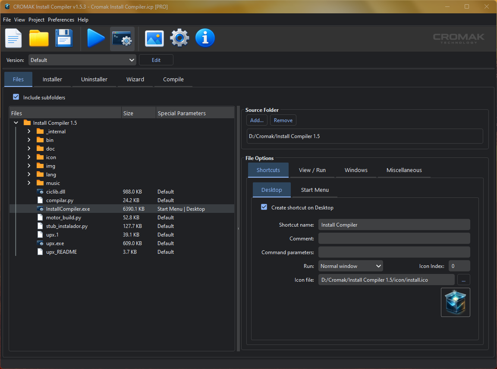
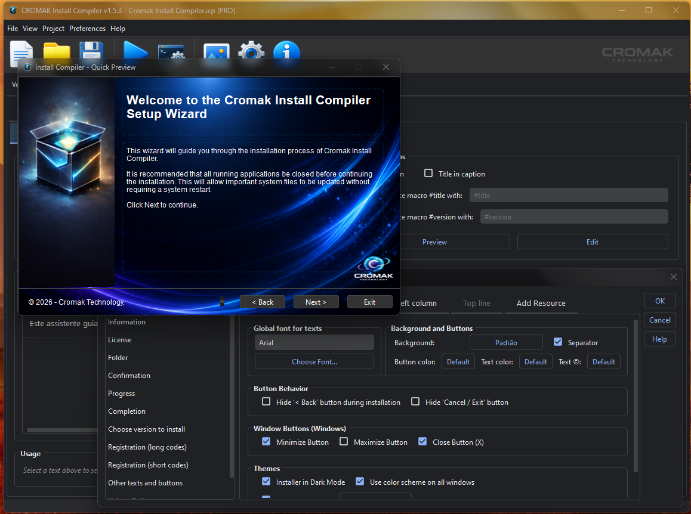
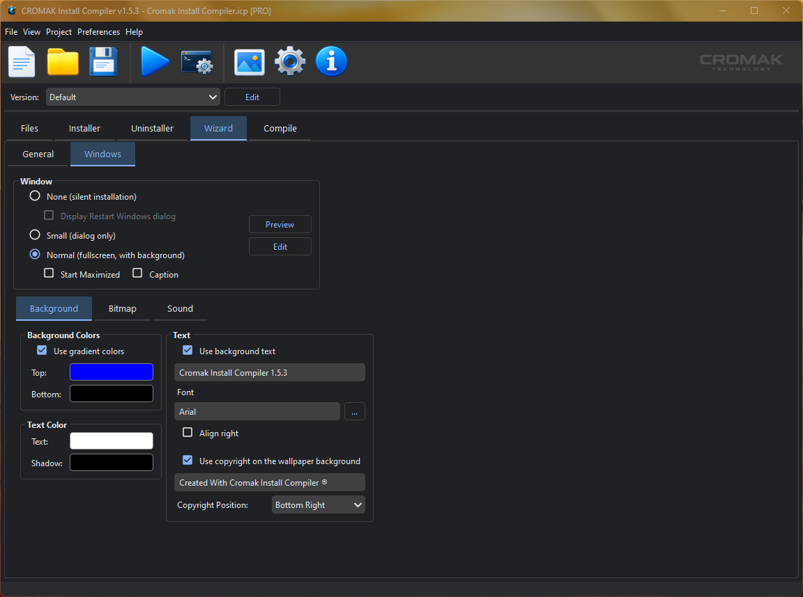
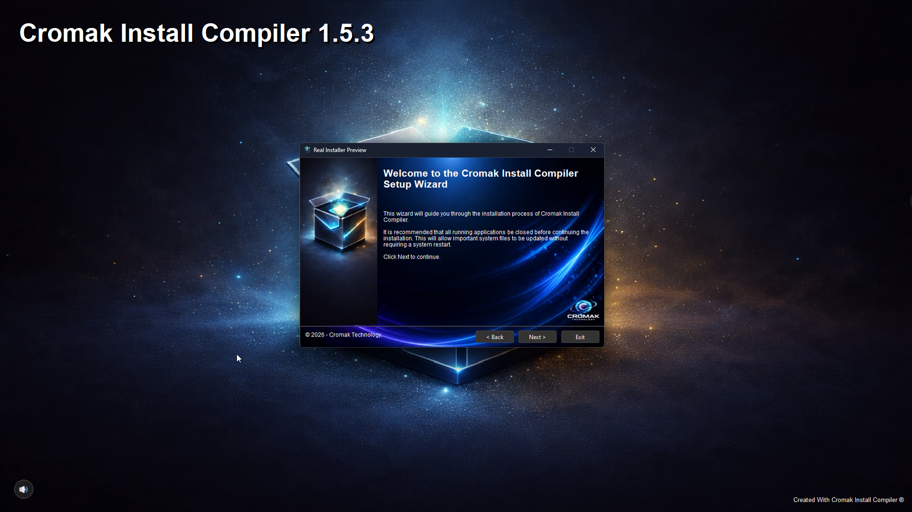
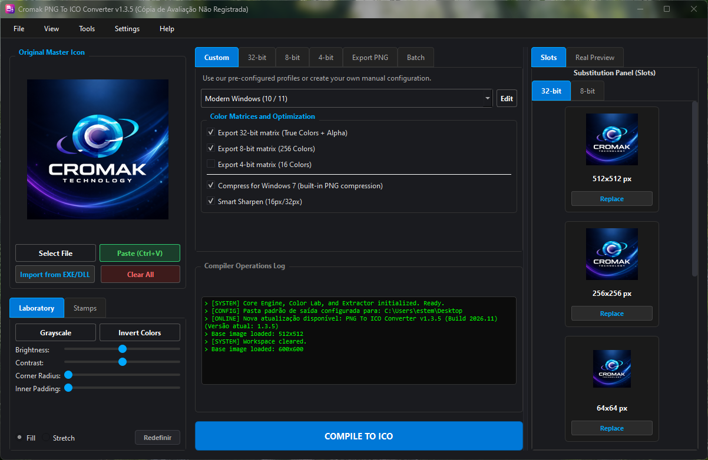
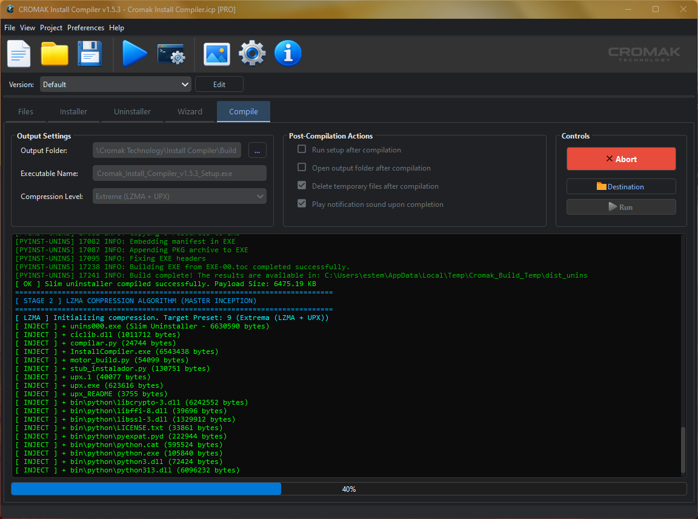

Cromak Install Compiler
Transforme seus Códigos e Softwares em Instaladores Profissionais (.EXE) para Windows.
O ponto final do seu código. Reúna executáveis, scripts e dependências em um único instalador autônomo, seguro e elegante. Com injeção de registro, desinstalador inteligente híbrido, estúdio de ícones nativo e a identidade visual da sua marca.

O cartão de visitas do seu software é a instalação.
Enviar arquivos .zip improvisados, pastas desorganizadas ou extratores arcaicos passa uma impressão amadora, gera desconfiança de vírus e aumenta pedidos de reembolso dos seus clientes.
O Cromak Install Compiler entrega um assistente visual moderno no padrão Windows 11 Fluent, com caminhos de instalação automáticos (como Program Files ou AppData), criação de atalhos na Área de Trabalho e no Menu Iniciar, injeção de chaves no Registro do Windows e um desinstalador completo nativo. Tudo isso através de uma interface visual simples, intuitiva e sem escrever uma única linha de código de script.
Por que Desenvolvedores Escolhem o Cromak?
Veja o comparativo direto entre as ferramentas clássicas baseadas em script, soluções corporativas de milhares de reais e a eficiência do Cromak Install Compiler.
| Recursos & Capacidades | Inno Setup / NSIS | Advanced Installer | Cromak Install Compiler |
|---|---|---|---|
| Facilidade de Uso | Exige código (Pascal / Scripts) | Curva de aprendizado complexa | 100% Visual Drag & Drop |
| Estúdio de Ícones 32-bit Integrado | Não possui | Exige ferramenta externa | Nativo (PNG to ICO + Extrator DLL/EXE) |
| Design do Assistente (UI) | Visual arcaico (Estilo Win95/XP) | Moderno | Fluent UI (Dark/Light + Scrollbar Pill) |
| Compressão Dupla (LZMA + UPX) | Manual por linha de comando | Sim | Redução de até 70% com 1 clique |
| Desinstalador Inteligente com Anti-Kill | Básico (Falha se app estiver aberto) | Sim | Mata processos e limpa AppData |
| Preço / Modelo de Licença | Grátis (Mas gasta dezenas de horas de trabalho) | R$ 2.400+/ano ($399 USD) | R$ 297,90 (Vitalício, Pague Uma Vez) |
Os 4 Pilares da Nossa Arquitetura
-
Injeção Avançada e Registro
Crie chaves de registro (Regedit), modifique arquivos INI dinamicamente, associe extensões personalizadas ao seu programa e aplique patches de texto diretamente nos arquivos instalados utilizando offsets hexadecimais.
-
Compressão Extrema (LZMA + UPX)
Não desperdice a banda do seu cliente. O motor possui níveis de compressão que vão desde a rápida até a configuração 'Extrema', fundindo algoritmos LZMA e UPX para reduzir o tamanho final do seu instalador de forma drástica em até 70%.
-
Desinstalador Inteligente e Híbrido
O pacote gera automaticamente um desinstalador para o seu software. Escolha entre o motor nativo padrão "Slim" (Tkinter), extremamente leve na faixa dos KBs, ou o motor visual robusto em PyQt6. Limpe chaves órfãs, execute auto-kill em processos e limpe dados do AppData.
-
Icon Converter Integrado
Não perca tempo com ferramentas externas. O pacote inclui um estúdio robusto para extrair ícones de DLLs/EXEs de terceiros, ou transformar seus PNGs e JPGs em arquivos .ico nativos para o Windows com suporte a resoluções de 32-bits (Alpha).
Explore o Estúdio por Dentro
Clique nas imagens para expandir e conhecer todos os módulos de configuração.

Gestão de Diretórios e Arquivos
Controle absoluto de pastas de destino, atalhos do Menu Iniciar e extração de dependências.

Textos e Contrato de Licença
Edite cada tela do instalador, adicione termos de uso (EULA) e controle a paleta de cores (Dark/Light mode).

Opções Avançadas e Execução
Defina nível de privilégio (UAC Admin), execução invisível e dependências de sistema.

Pré-visualização (WYSIWYG)
Teste o design do assistente, alinhamentos e bitmaps em tempo real antes de iniciar o processo de compilação.

Customização de Janela e Áudio
Projete uma instalação imersiva em tela cheia com gradientes de fundo e trilha sonora de instalação integrada.

Instalador Final em Ação
O resultado é um pacote elegante, rápido e otimizado, pronto para impressionar o seu usuário final.

Estúdio de Ícones (PNG To ICO)
Não dependa de sites externos. Use o conversor nativo para criar ícones multirresolução (32-bits com Alpha), aplicar carimbos (PRO/Admin) e extrair matrizes de outros executáveis.

Terminal e Logs de Build
Monitore cada etapa crítica: desde a injeção do desinstalador até o empacotamento e geração do Checksum SHA-256.
Escolha a Licença Ideal para o seu Workflow
Crie instaladores de nível profissional e aumente a credibilidade dos seus softwares.
Plano Grátis
- Painel Visual Completo (WYSIWYG)
- Compilação Habilitada
- Acesso ao Icon Converter
- Empacotamento de Binários e Dependências
- Exibe tela de avaliação (Trial)
- Sem atualizações automáticas do motor
- Sem suporte prioritário
Servidor Cloud Oficial • 100% Livre de Vírus
Pessoal Anual
- 1 Licença de Máquina Ativa
- Compilações Ilimitadas
- Icon Converter PRO Liberado
- 100% Sem Telas ou Avisos de Trial
- Projetos 100% Royalty-Free (Comercial)
- Atualizações Contínuas do Software
- Suporte por E-mail
Fale com nossa equipe comercial e técnica
Licença Vitalícia PRO
- Até 3 Licenças de Máquina Simultâneas
- Pagamento Único (Sem Mensalidades ou Renovação)
- Atualizações Vitalícias de Todas as Versões
- Compressão Extrema LZMA + UPX Ativada
- Desinstalador Inteligente com Anti-Kill Liberado
- 100% Royalty-Free (Uso Comercial Ilimitado)
- Suporte Técnico Prioritário Direto
Pague uma única vez • Liberação direta com o time
Pagamento 100% Seguro
Processamento criptografado via Stripe com proteção SSL de 256 bits.
Garantia de 7 Dias
Se o software não atender ao seu projeto, devolvemos 100% do seu dinheiro.
Ativação via Suporte
Envie o comprovante de pagamento ao suporte para receber sua chave de ativação oficial.
100% Royalty-Free
Distribua e venda instaladores para clientes finais sem pagar taxas extras.
Instaladores Multilíngues Globais
Venda seu software para o mundo inteiro. O assistente de instalação gerado pelo Cromak detecta automaticamente o idioma do sistema operacional do seu cliente ou permite que ele selecione sua língua nativa no primeiro clique.
Requisitos do Ambiente de Build
Sistema Operacional
Windows 10 / 11 (64-bit)
Memória RAM
4 GB Mínimo (8 GB recomendado para grandes projetos)
Armazenamento
80 MB de espaço livre para a instalação
Arquivos e Linguagens Suportadas
Qualquer executável ou binário (Python, C#, C++, Rust, Go, Electron, Node, Unity)
Perguntas Frequentes (FAQ)
Posso vender comercialmente os softwares criados com o Install Compiler? Preciso pagar royalties?
Não! Você NÃO paga nenhum centavo em royalties. Todos os instaladores e pacotes que você compilar com o Cromak Install Compiler são 100% de sua propriedade intelectual. Você pode empacotar softwares comerciais, distribuí-los e vendê-los para quantos clientes quiser, sem taxas adicionais.
Preciso saber programar para criar instaladores?
Não! Ao contrário de ferramentas antigas como Inno Setup e NSIS, que exigem o aprendizado de linguagens complexas como Pascal ou scripts manuais, o Cromak Install Compiler é 100% visual. Você configura diretórios, registros, EULA, ícones e parâmetros através de abas organizadas e visualiza o resultado em tempo real (WYSIWYG).
Ele funciona para softwares gerados com PyInstaller, cx_Freeze ou Nuitka?
Sim, com perfeição! Ele é especialmente recomendado para desenvolvedores Python. O PyInstaller em modo pasta gera centenas de bibliotecas soltas (.dll, .pyd). O Install Compiler une todos esses arquivos em um único e elegante arquivo `Setup.exe` compactado com tecnologia LZMA + UPX, reduzindo drasticamente o tamanho do download.
O instalador final gerado exige dependências na máquina do cliente?
Nenhuma! O instalador gerado é um binário PE Windows totalmente autônomo e nativo. Ele roda de forma independente sem exigir pré-instalação de Python, Java, .NET ou C++ Redistributable no computador do seu cliente (a menos que o seu próprio software demande tais dependências).
Como recebo minha chave de ativação após a compra?
Após concluir seu pagamento no checkout seguro da Stripe, basta entrar em contato com nossa equipe de suporte (via e-mail ou WhatsApp com o comprovante de pagamento). Nossa equipe gerará e enviará imediatamente sua chave de ativação oficial com atendimento prioritário.
Como funciona a Garantia de 7 Dias?
Oferecemos garantia incondicional de 7 dias. Se por qualquer motivo o Cromak Install Compiler não atender às necessidades de empacotamento do seu projeto, basta nos enviar um e-mail solicitando o reembolso e devolveremos 100% do valor pago via Stripe, sem questionamentos.